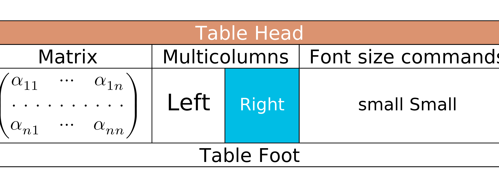
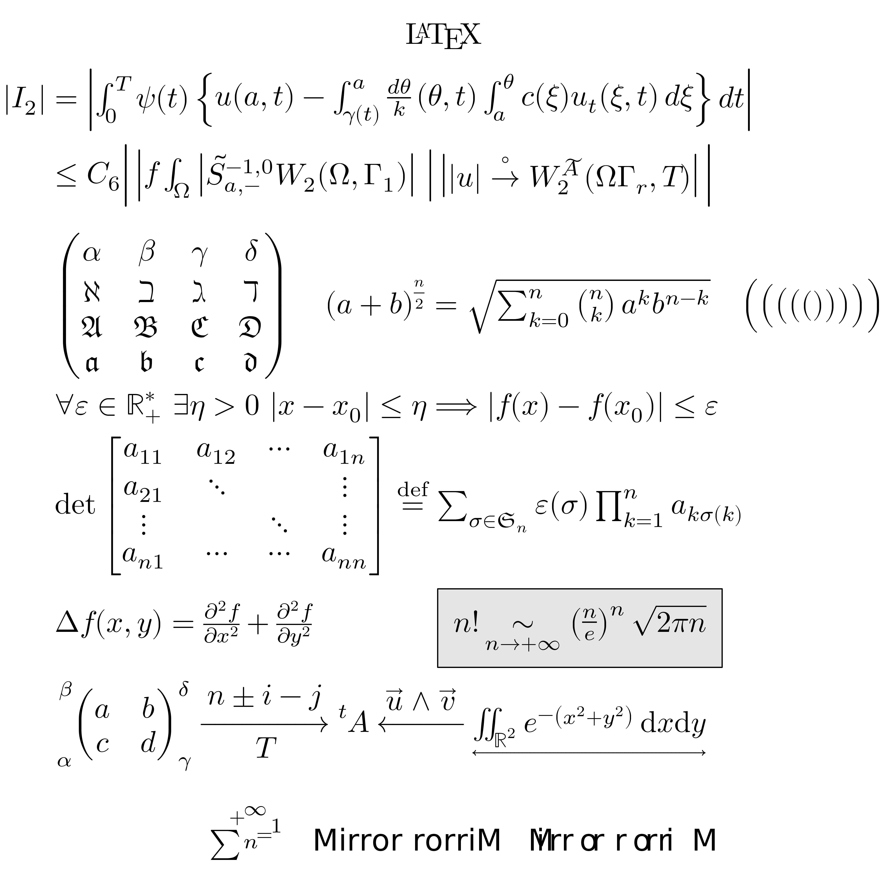

What is gridmicrotex?
gridmicrotex renders LaTeX math equations as native
R grid graphics objects (grobs). It uses the MicroTeX C++ library
as its layout engine — MicroTeX parses LaTeX, builds the TeX box model,
and computes exact glyph coordinates. The package intercepts this layout
data and maps it to native grid primitives (pathGrob,
segmentsGrob, rectGrob,
textGrob), producing a gTree that works on any
R graphics device at any resolution.
Key features:
- No external LaTeX installation required — MicroTeX is fully embedded
- Resolution-independent vector output on all R devices (PNG, PDF, SVG, …)
- Full math support: fractions, roots, integrals, matrices, Greek letters, accents, delimiters, and more
- Multiple math fonts (Latin Modern Math, XITS Math, Garamond Math, TeX Gyre DejaVu Math)
- Color support via
\textcolor{} - ggplot2 integration with
geom_latex()andelement_latex() - CJK and multilingual text in
\text{}blocks
Basic usage
The core function is latex_grob(), which returns a grid
grob:
g <- latex_grob("\\frac{-b \\pm \\sqrt{b^2 - 4ac}}{2a}", fontsize = 24)
grid::grid.newpage()
grid::grid.draw(g)For quick rendering, use grid.latex():
grid::grid.newpage()
grid.latex("\\sum_{i=1}^{n} x_i^2", fontsize = 28)Positioning and justification
Control placement with x, y,
hjust, and vjust:
grid::grid.newpage()
grid.latex("E = mc^2", x = 0.2, y = 0.7, hjust = 0, fontsize = 24)
grid.latex("F = ma", x = 0.2, y = 0.3, hjust = 0, fontsize = 24)Colors
Set the formula color via gp, or use
\textcolor{} within the LaTeX:
grid::grid.newpage()
grid.latex(
"\\textcolor{red}{\\alpha} + \\textcolor{blue}{\\beta} = \\gamma",
fontsize = 28
)Math fonts
The package bundles Latin Modern Math (default), XITS Math, and TeX Gyre DejaVu Math. For most users, the easiest workflow is:
- List available math fonts with
available_math_fonts() - Select one with
set_math_font() - Render formulas normally (no OTF/CLM paths needed)
available_math_fonts()
#> [1] "Garamond-Math" "LatinModernMath-Regular"
#> [3] "TeXGyreDejaVuMath-Regular" "XITS Math"
set_math_font("xits")
grid::grid.newpage()
grid.latex("\\int_0^1 f(x)\\,dx", fontsize = 24)
# Switch back to Latin Modern Math
set_math_font("lm")You can still override the font per call via
math_font:
grid::grid.newpage()
grid::pushViewport(grid::viewport(layout = grid::grid.layout(2, 1)))
grid::pushViewport(grid::viewport(layout.pos.row = 1))
grid.latex("\\int_0^1 f(x)\\,dx", fontsize = 24)
grid::upViewport()
grid::pushViewport(grid::viewport(layout.pos.row = 2))
grid.latex("\\int_0^1 f(x)\\,dx", fontsize = 24, math_font = "xits")
grid::upViewport(2)Use available_math_fonts() to list loaded fonts and
check_fonts() for a diagnostic report.
Advanced: loading custom fonts
Use load_font() only when you need a custom font that is
not already bundled/loaded. In the current engine, custom loading still
needs a matching CLM metrics file (auto-discovered when possible):
load_font("path/to/MyFont.otf")You can find and download other fonts with CLM here
Render modes
gridmicrotex supports two rendering modes for math glyphs:
"typeface"(default): Renders glyphs as native text using the math font’s typeface. This produces selectable, searchable, and accessible text in PDF and SVG output. Requires the math font (e.g., Latin Modern Math) to be installed on the system, and a device that supports font embedding (e.g.,ragg::agg_png(),svglite::svglite(),grDevices::cairo_pdf()). On devices that do not support typeface rendering (e.g., the basepdf()device), the package automatically falls back to path mode with a warning."path": Renders each glyph as a filled vector path. This works on all R graphics devices and produces pixel-perfect output. However, text in PDF/SVG output is not selectable or searchable.
# Default typeface mode (selectable text in PDF/SVG)
grid.latex("E = mc^2", fontsize = 24)
# Explicit path mode (works everywhere, but text is not selectable)
grid.latex("E = mc^2", fontsize = 24, render_mode = "path")Important: Do not use
showtext::showtext_auto()with typeface mode. The showtext package globally intercepts all text rendering and converts it to vector paths. This silently defeats typeface mode, causing all math glyphs to appear as paths instead of native text — even on devices likesvgliteandraggthat fully support font embedding. If you need showtext for other parts of your plot, disable it before drawing LaTeX formulas:showtext::showtext_auto(FALSE) grid.latex("E = mc^2", fontsize = 24) # typeface mode works correctly
Querying dimensions
latex_dims() returns the bounding box of an
expression:
dims <- latex_dims("\\frac{a}{b}", fontsize = 20)
dims
#> $width
#> [1] 8bigpts
#>
#> $height
#> [1] 21bigpts
#>
#> $depth
#> [1] 7bigpts
#>
#> $baseline
#> [1] 0.6662558This is useful for layout calculations and ensuring labels fit.
Text rendering and CJK support
Text inside \text{} and \mbox{} is rendered
using R’s standard text-rendering system. This means
gp$fontfamily controls the font for all
text content — Latin letters, CJK characters, Cyrillic, and any other
script your R graphics device supports:
grid::grid.newpage()
grid.latex("x^2 + \\text{你好}", fontsize = 24, gp = grid::gpar(fontfamily = "sans"))Any font available to R works: base families like
"sans", "serif", "mono", or fonts
registered via showtext /
systemfonts.
Font pairing
The bundled math fonts have different styles. For a consistent look,
pair them with a matching fontfamily:
| Math font | Style | Suggested fontfamily
|
|---|---|---|
Latin Modern Math ("lm") |
Serif | "serif" |
XITS Math ("xits") |
Serif | "serif" |
Garamond Math ("garamond") |
Serif | "serif" |
TeX Gyre DejaVu Math ("dejavu") |
Sans-serif | "sans" |
grid::grid.newpage()
grid.latex(
"\\text{Theorem: } \\forall x \\in \\mathbb{R},\\; x^2 \\geq 0",
fontsize = 20, math_font = "dejavu",
gp = grid::gpar(fontfamily = "sans")
)Supported LaTeX
gridmicrotex uses the MicroTeX engine, which is a math formula renderer, not a full document typesetter. It covers the vast majority of math notation you would use in plots and figures, but does not attempt to replace a full LaTeX installation.
Complicated examples
grid::grid.newpage()
grid.latex(paste0(
"\\begin{array}{l}",
" \\forall\\varepsilon\\in\\mathbb{R}_+^*\\ \\exists\\eta>0",
"\\ |x-x_0|\\leq\\eta\\Longrightarrow|f(x)-f(x_0)|\\leq\\varepsilon\\\\",
" \\det",
" \\begin{bmatrix}",
" a_{11}&a_{12}&\\cdots&a_{1n}\\\\",
" a_{21}&\\ddots&&\\vdots\\\\",
" \\vdots&&\\ddots&\\vdots\\\\",
" a_{n1}&\\cdots&\\cdots&a_{nn}",
" \\end{bmatrix}",
" \\overset{\\mathrm{def}}{=}\\sum_{\\sigma\\in\\mathfrak{S}_n}",
"\\varepsilon(\\sigma)\\prod_{k=1}^n a_{k\\sigma(k)}\\\\",
" \\int_0^\\infty{x^{2n} e^{-a x^2}\\,dx} = \\frac{2n-1}{2a}",
" \\int_0^\\infty{x^{2(n-1)} e^{-a x^2}\\,dx}",
" = \\frac{(2n-1)!!}{2^{n+1}} \\sqrt{\\frac{\\pi}{a^{2n+1}}}\\\\",
"\\end{array}"
), fontsize = 16)
grid::grid.newpage()
grid.latex(
"
\\newcolumntype{s}{>{\\color{#1234B6}}c}
\\begin{array}{|c|c|c|s|}
\\hline
\\rowcolor{Tan}\\multicolumn{4}{|c|}{\\textcolor{white}{\\bold{\\text{Table Head}}}}\\\\
\\hline
\\text{Matrix}&\\multicolumn{2}{|c|}{\\text{Multicolumns}}&\\text{Font size commands}\\\\
\\hline
\\begin{pmatrix}
\\alpha_{11}&\\cdots&\\alpha_{1n}\\\\
\\hdotsfor{3}\\\\
\\alpha_{n1}&\\cdots&\\alpha_{nn}
\\end{pmatrix}
&\\large \\text{Left}&\\cellcolor{#00bde5}\\small \\textcolor{white}{\\text{\\bold{Right}}}
&\\small \\text{small Small}\\\\
\\hline
\\multicolumn{4}{|c|}{\\text{Table Foot}}\\\\
\\hline
\\end{array}
",
fontsize = 22
)
grid::grid.newpage()
grid.latex(
"\\definecolor{gris}{gray}{0.9}
\\definecolor{noir}{rgb}{0,0,0}
\\definecolor{bleu}{rgb}{0,0,1}
\\fatalIfCmdConflict{false}
\\newcommand{\\pa}{\\left|}
\\begin{array}{c}
\\LaTeX\\\\
\\begin{split}
|I_2| &= \\pa\\int_0^T\\psi(t)\\left\\{ u(a,t)-\\int_{\\gamma(t)}^a \\frac{d\\theta}{k} (\\theta,t) \\int_a^\\theta c(\\xi)
u_t (\\xi,t)\\,d\\xi\\right\\}dt\\right|\\\\
&\\le C_6 \\Bigg|\\pa f \\int_\\Omega \\pa\\widetilde{S}^{-1,0}_{a,-}
W_2(\\Omega, \\Gamma_1)\\right|\\ \\right|\\left| |u|\\overset{\\circ}{\\to} W_2^{\\widetilde{A}}(\\Omega\\Gamma_r,T)\\right|\\Bigg|\\\\
&\\\\
&\\begin{pmatrix}
\\alpha&\\beta&\\gamma&\\delta\\\\
\\aleph&\\beth&\\gimel&\\daleth\\\\
\\mathfrak{A}&\\mathfrak{B}&\\mathfrak{C}&\\mathfrak{D}\\\\
\\boldsymbol{\\mathfrak{a}}&\\boldsymbol{\\mathfrak{b}}&\\boldsymbol{\\mathfrak{c}}&\\boldsymbol{\\mathfrak{d}}
\\end{pmatrix}
\\quad{(a+b)}^{\\frac{n}{2}}=\\sqrt{\\sum_{k=0}^n\\tbinom{n}{k}a^kb^{n-k}}\\quad
\\Biggl(\\biggl(\\Bigl(\\bigl(()\\bigr)\\Bigr)\\biggr)\\Biggr)\\\\
&\\forall\\varepsilon\\in\\mathbb{R}_+^*\\ \\exists\\eta>0\\ |x-x_0|\\leq\\eta\\Longrightarrow|f(x)-f(x_0)|\\leq\\varepsilon\\\\
&\\det
\\begin{bmatrix}
a_{11}&a_{12}&\\cdots&a_{1n}\\\\
a_{21}&\\ddots&&\\vdots\\\\
\\vdots&&\\ddots&\\vdots\\\\
a_{n1}&\\cdots&\\cdots&a_{nn}
\\end{bmatrix}
\\overset{\\mathrm{def}}{=}\\sum_{\\sigma\\in\\mathfrak{S}_n}\\varepsilon(\\sigma)\\prod_{k=1}^n a_{k\\sigma(k)}\\\\
&\\Delta f(x,y)=\\frac{\\partial^2f}{\\partial x^2}+\\frac{\\partial^2f}{\\partial y^2}\\qquad\\qquad \\fcolorbox{noir}{gris}
{n!\\underset{n\\rightarrow+\\infty}{\\sim} {\\left(\\frac{n}{e}\\right)}^n\\sqrt{2\\pi n}}\\\\
&\\sideset{_\\alpha^\\beta}{_\\gamma^\\delta}{
\\begin{pmatrix}
a&b\\\\
c&d
\\end{pmatrix}}
\\xrightarrow[T]{n\\pm i-j}\\sideset{^t}{}A\\xleftarrow{\\overrightarrow{u}\\wedge\\overrightarrow{v}}
\\underleftrightarrow{\\iint_{\\mathds{R}^2}e^{-\\left(x^2+y^2\\right)}\\,\\mathrm{d}x\\mathrm{d}y}
\\end{split}\\\\
\\rotatebox{30}{\\sum_{n=1}^{+\\infty}}\\quad\\mbox{Mirror rorriM}\\reflectbox{\\mbox{Mirror rorriM}}
\\end{array}",
fontsize = 22
)
What is not supported
MicroTeX is a math formula renderer, not a full LaTeX engine. The following are outside its scope:
-
Document structure:
\section,\begin{document}, page layout, headers/footers,\tableofcontents -
Package loading:
\usepackage{}— all supported commands are built in - Paragraph text: line breaking, hyphenation, justified paragraphs
- TikZ / PGF drawing commands
-
Images:
\includegraphics -
Cross-references:
\label,\ref,\cite, bibliographies -
Theorem environments:
\begin{theorem},\begin{proof} -
Lists:
itemize,enumerate,description -
Some amsmath commands:
\substack,\tag, equation numbering
For most statistical graphics use cases — axis labels, annotations, legends, and in-plot formulas — the supported feature set is more than sufficient.
Comparison with alternatives
| Approach | LaTeX required? | Device independent? | Vector? | Math coverage |
|---|---|---|---|---|
tikzDevice |
Yes | No | Yes | Full |
xdvir |
Yes | No | Yes | Full |
latexpdf |
Yes | No | Yes | Full (tables) |
latex2exp |
No | Yes | Yes | Limited |
plotmath |
No | Yes | Yes | Limited |
| gridmicrotex | No | Yes | Yes | Broad |
Graphics backend
The default graphics device on Windows (windows()) and
macOS (quartz()) may not find the bundled math fonts,
producing warnings like:
font family not found in Windows font databaseTo avoid this, switch to a modern graphics backend that uses systemfonts for font resolution:
# For knitr / R Markdown --- add to your setup chunk:
knitr::opts_chunk$set(dev = "ragg_png")
# For interactive use:
options(device = function(...) ragg::agg_png(tempfile(fileext = ".png"), ...))Recommended backends:
| Backend | Format | Package |
|---|---|---|
ragg::agg_png() |
PNG | ragg |
svglite::svglite() |
SVG | svglite |
grDevices::cairo_pdf() |
Base R (Cairo build) |
Alternatively, use render_mode = "path" to bypass font
lookup entirely — glyphs are drawn as vector paths, which works on all
devices but produces non-selectable text in PDF/SVG.